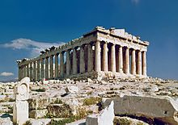
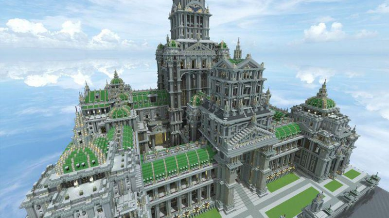

Arquitectura
¿Qué es?
La arquitectura (del latín architectūra, architectūrae, a su vez del griego antiguo ἀρχιτέκτων, architéctōn, ‘arquitecto’ o ‘constructor jefe’, compuesto de ἀρχός, archós ‘jefe’, ‘guía’ y τέκτων, téctōn, ‘constructor’) es el arte y la técnica de proyectar, diseñar y construir edificios, modificando el hábitat humano y estudiando, la estética, el buen uso y la función de los espacios, ya sean arquitectónicos o urbanos.
La arquitectura nació con el hombre de la prehistoria, durante el Neolítico, cuando diversos grupos humanos desarrollaron un estilo de vida sedentario basado en la agricultura. Este nuevo modo de vida conllevó al desarrollo de viviendas estables y recintos ceremoniales, los cuales fueron evolucionando estéticamente a partir de elementos simbólicos presentes en el contexto sociocultural donde se desarrollaban. Así surgieron, por ejemplo, los dolmenes y crómlechs en Europa, construidos con enormes bloques de piedra. A medida que las sociedades se hacían más complejas y extensas, surgieron los primeros núcleos urbanos cerrados, con viviendas agrupadas en torno a lugares sagrados. De esta forma nacieron las altas culturas de Medio Oriente: Mesopotamia y Egipto, que legaron numerosas obras arquitectónicas, de las que destacan, por ejemplo, los sistemas de irrigación, los zigurats, los templos y las pirámides.
Fueron los antiguos griegos y romanos quienes perfeccionaron la arquitectura, sentando las bases de la arquitectura clásica y convirtiéndola en punto de referencia para los siglos venideros. Durante esta etapa se desarrollaron los arcos y columnas estilizadas, se trabajaron la piedra caliza y el mármol, los sistemas de irrigación y acueductos, ciudades saneadas y se dio origen al concreto. Como ejemplos del alto grado de desarrollo arquitectónico durante aquella época, se tienen al Partenón de Atenas y al Coliseo romano.
¿Cómo se hace?
¿Cómo ha cambiado con el tiempo?
¿Qué la hace única?
¿Cómo conocer de ella y practicarla en casa?
En un nivel básico, la arquitectura es importante para la sociedad, porque proporciona el entorno físico en el que vivimos. En un nivel más profundo, la arquitectura proporciona una expresión de la civilización humana en el tiempo, que permanece luego, como el caso de los monumentos, para su estudio por las generaciones futuras.
La arquitectura es una expresión de la verdadera fuerza de una sociedad, porque las cosas que los humanos más valoramos son aquellas que son casi irrevocables, casi «para siempre».
A diferencia de otras formas de arte, la arquitectura se encuentra a la vista y es difícil deshacerse de ella, nos rodea cuando caminamos por las ciudades del mundo. La arquitectura es una expresión relativamente permanente de cómo la sociedad se ve a sí misma en su conjunto. Es un poderoso reflejo de la cultura humana.
La arquitectura es en parte arte y en parte ciencia. Una mezcla entre razón y emoción está siempre presente en la buena arquitectura. Como arte proporciona una forma de expresión creativa que lleva a la sociedad a mirar su espacio de vida y el medio ambiente en general de diferentes maneras. Al mismo tiempo, la buena arquitectura responde a las necesidades funcionales de la sociedad.

Recomendaciones generales
A mi gusto este arte es uno de los mejores ya que el significado que deja a las generaciones futuras les da mucho para investigar acerca de todo el contexto que se vivia en los años pasados con el simple hecho de analizar las estructuras de algun lugar uno se puede dar a la idea de los sucesos que debieron pasar en un pasado, guerras, terremotos, rituales, sucesos historicos etc.
Historia de la arquitectura
Ganadores del nobel "PRITZKER"
Historieta